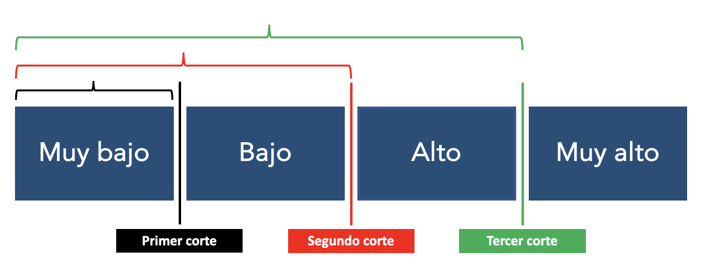
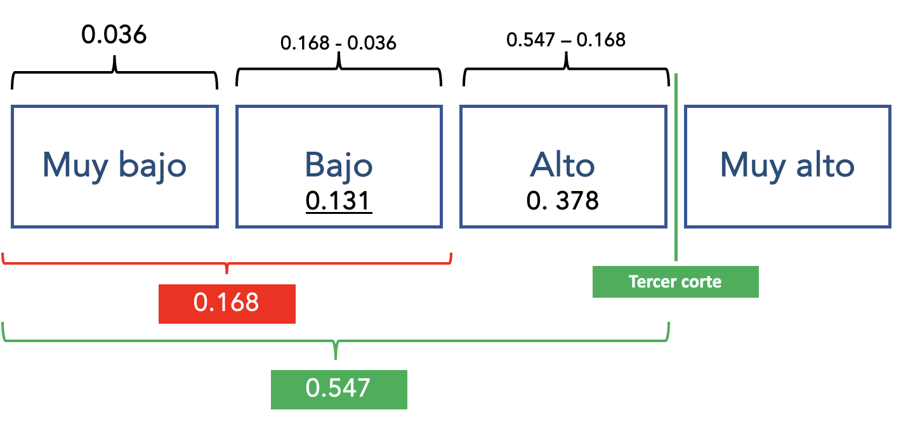
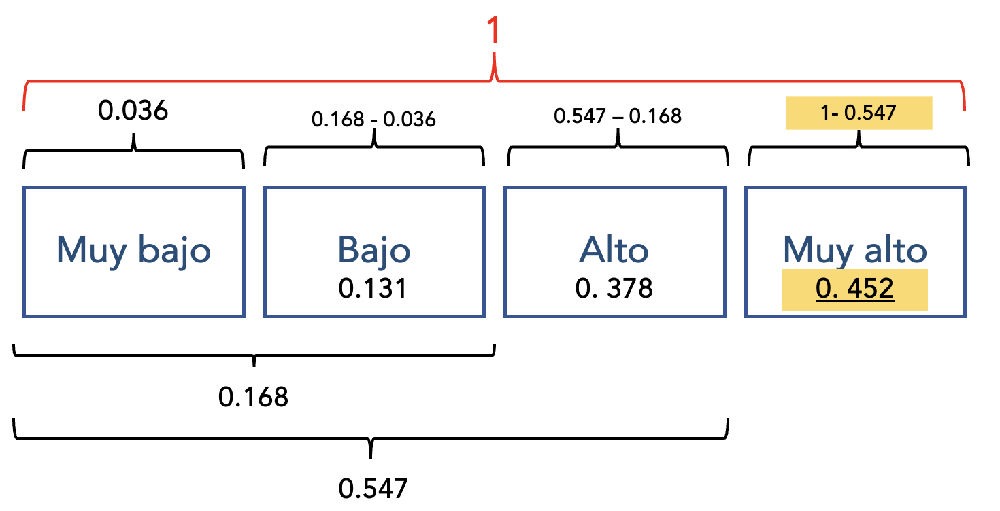

Regresión Logística Ordinal

Paso 1: Preparar la data
Variable dependiente: Salario anual (nivel)
Está como un número, identificamos los cuartiles para poder realizar 3 cortes y crear cuatro categorías.
## Min. 1st Qu. Median Mean 3rd Qu. Max.
## 15750 24000 28875 34420 36938 135000Inidcamos los puntos de corte, guiándonos de los cuartiles, el resultado nos dará un factor ordenado.
data$salario_actual_ordinal <- cut(data$salario_actual, breaks = c(0, 24000,28875, 36938,135000),
include.lowest = T, ordered_result = T,
labels = c("Muy Bajo", "Bajo",
"Alto", "Muy Alto"))
table(data$salario_actual_ordinal)##
## Muy Bajo Bajo Alto Muy Alto
## 120 117 118 119Variables independientes: sexo y educación
- Sexo: identifiquemos como está y de ser necesario recategoricemos y agreguemos etiquetas.
## [1] "numeric"##
## 0 1
## 216 258data <- data %>%
mutate(sexo = factor(sexo, levels = 0:1, labels = c("Mujer", "Hombre")))
table(data$sexo)##
## Mujer Hombre
## 216 258Convertimos a dummy a la variable sexo
- Educación: Identifiquemos como está
## num [1:474] 15 16 12 8 15 15 15 12 15 12 ...
## - attr(*, "label")= chr "Nivel educativo"
## - attr(*, "format.spss")= chr "F2.0"
## - attr(*, "display_width")= int 9
## - attr(*, "labels")= Named num [1:11] 0 8 12 14 15 16 17 18 19 20 ...
## ..- attr(*, "names")= chr [1:11] "0 (Ausente)" "8" "12" "14" ...Volvemos Dummy la variable Sexo
Revisamos que se hayan añadido nuestras variables correctamente.
## [1] "id" "sexo" "fechnac"
## [4] "educ" "catlab" "salario_actual"
## [7] "salario_inicial" "antiguedad" "experiencia"
## [10] "minoría" "directivo" "salario_actual_ordinal"
## [13] "sexo_Mujer" "sexo_Hombre"Veamos si el nivel educativo, y el ser mujer influye en el salario actual
Paso 2: Creación del modelo
## Call:
## polr(formula = salario_actual_ordinal ~ sexo_Mujer + educ, data = data,
## Hess = T)
##
## Coefficients:
## Value Std. Error t value
## sexo_Mujer -1.8363 0.20268 -9.06
## educ 0.4618 0.04136 11.17
##
## Intercepts:
## Value Std. Error t value
## Muy Bajo|Bajo 3.6632 0.5566 6.5811
## Bajo|Alto 5.3306 0.5752 9.2669
## Alto|Muy Alto 7.1165 0.6214 11.4515
##
## Residual Deviance: 1000.749
## AIC: 1010.749Veamos el p-value y determinar la significancia de las variables independientes
Guardamos la tabla de coeficientes en un objeto.
## Value Std. Error t value
## sexo_Mujer -1.8362608 0.20267681 -9.060044
## educ 0.4618446 0.04136102 11.166180
## Muy Bajo|Bajo 3.6632440 0.55662857 6.581128
## Bajo|Alto 5.3305723 0.57522584 9.266921
## Alto|Muy Alto 7.1165070 0.62144567 11.451535Calculamos el p-value a partir de t-value y lo almacenamos en otro objeto.
## sexo_Mujer educ Muy Bajo|Bajo Bajo|Alto Alto|Muy Alto
## 1.303979e-19 5.969318e-29 4.668919e-11 1.915972e-20 2.310177e-30Agregamos este nuevo objeto (vector) a la tabla de coeficientes.
## Value Std. Error t value p value
## sexo_Mujer -1.8362608 0.20267681 -9.060044 1.303979e-19
## educ 0.4618446 0.04136102 11.166180 5.969318e-29
## Muy Bajo|Bajo 3.6632440 0.55662857 6.581128 4.668919e-11
## Bajo|Alto 5.3305723 0.57522584 9.266921 1.915972e-20
## Alto|Muy Alto 7.1165070 0.62144567 11.451535 2.310177e-30Esta tabla nos da un resumen de los coeficientes y el pvalue.
- H0: La variable independiente no aporta al modelo
Lo que buscamos entonces es ver si el p-value es menor a 0.05 en las variables independientes seleccionadas.
Paso 3: Interpretamos el efecto de las variables
##
## Group Term Estimate
## Alto educ 0.01031
## Alto sexo_Mujer -0.09534
## Bajo educ -0.00827
## Bajo sexo_Mujer 0.08785
## Muy Alto educ 0.05733
## Muy Alto sexo_Mujer -0.23543
## Muy Bajo educ -0.05937
## Muy Bajo sexo_Mujer 0.24292
##
## Columns: term, group, estimateRecuerda que si la relación es positiva aumenta en 1 o es 1 (si es dicotómica), la probabilidad aumenta; pero si es negativa si aumenta en 1 o es 1, la probabilidad disminuye.
Cuando los años de educación aumentan en una unidad, la probabilidad de que tenga un salario alto aumenta en 1.03%. 
Cuando la persona es mujer (cuando sexo_Mujer es 1), la probabilidad de que tenga un salario alto disminuye en 9.53%
Y así para la demás variables….
Paso 4: Preparamos la ecuación del modelo
Hagamos un ejemplo, queremos hallar la probabilidad de cada uno de los cortes y categorías para el caso de que la persona sea hombre y tenga 15 años de educación.
¿Cuál es la probabilidad de tener un salario alto para un hombre (sexo_Mujer = 0) con 15 años de educación?
Recordemos la ecuación:
Recordamos los coeficientes
## Value Std. Error t value
## sexo_Mujer -1.8362608 0.20267681 -9.060044
## educ 0.4618446 0.04136102 11.166180
## Muy Bajo|Bajo 3.6632440 0.55662857 6.581128
## Bajo|Alto 5.3305723 0.57522584 9.266921
## Alto|Muy Alto 7.1165070 0.62144567 11.451535
PRIMER CORTE: Muy Bajo | Bajo
Hallemos primero la probabilidad del primer corte, que era Muy Bajo - Bajo. Es decir, que la persona sea hombre con 15 años de educación tenga un salario que sea menor o igual a muy bajo.
Reemplazamos los números de los coeficientes del corte de las variables independientes.
num_1 <- exp(3.6632 - ((-1.8363*0) + (0.4618*15)))
denom_1 <- 1 + num_1
p_menorigual_muybajo<- num_1/denom_1
p_menorigual_muybajo## [1] 0.03683416La probabilidad de que una persona que sea hombre y con 15 años de educación tenga un salario menor o igual a Muy Bajo (solo muy bajo) es de 0.036 o de 3.6%

SEGUNDO CORTE: Bajo | Alto
Ahora calculemos para todo lo que está por debajo de alto (menor o igual a bajo); es decir, muy bajo y bajo.
num_2 <- exp(5.3306 - ((-1.8363*0) + (0.4618*15)))
denom_2 <- (1 + num_2)
p_menorigual_bajo<-num_2/denom_2
p_menorigual_bajo## [1] 0.1684854La probabilidad de que una persona que sea hombre y con 15 años de educación tenga un salario menor o igual a bajo es de 0.16 o 16%
SOLO PROBABILIDAD DE BAJO
Se tiene la probabilidad de ser bajo y muy bajo, y previamente se hizo la de muy muy bajo, estos se restan vas a tener la probabilidad de ser únicamente bajo
## [1] 0.1316512La probabilidad de que una persona que sea hombre y con 15 años de educación tenga un salario Alto es de 0.13 o de 13.1%

TERCER CORTE: Alto - Muy alto
En este corte se calculan los tres escalones menores o iguales a alto: Muy bajo, bajo y alto.
num_3 <-exp(7.1165 - ((-1.8363*0) + (0.4618*15)))
denom_3 <- (1 + num_3)
p_menorigual_alto<-num_3/denom_3
p_menorigual_alto## [1] 0.5472337La probabilidad de que una persona que sea hombre y con 15 años de educación tenga un salario menor o igual a Alto - Bajo es de 0.54 o de 54%.
SOLO PROBABILIDAD DE ALTO
A la probabilidad de tener un nivel salarial menor o igual a alto (resultado de tercer corte), le restamos la probabilidad de tener un salario de nivel bajo, muy bajo (resultado de segundo corte).
## [1] 0.3787484La probabilidad de que una persona que sea hombre y con 15 años de educación tenga un salario Alto es de 0.378 o de 37.8%

SOLO PROBABILIDAD DE MUY ALTO
Como recordamos que era una probabilidad acumulada, donde llegaba hast MUY ALTO era 1. Ya tenemos la probabilidad de tener salario alto o menos, para hallar la probabilidad de que sea muy alto, solo debemos restar el resultado del tercer corte a 1 (1- Tercer corte)
## [1] 0.4527663Entonces, la probabilidad de que una persona que sea hombre y con 15 años de educación tenga un salario Muy Alto es de 45.2%
